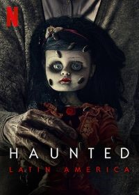
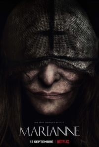
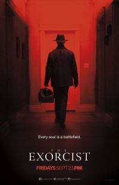

.png)
Haunted: Latinoamérica
| Estreno | 31 de marzo de 2021 | Temporadas | 1 |
| Episodios | 5 |
| Duración | 25 a 50 minutos |
| Protagonistas | sus nombres fueron cambiados para respetar su privacidad |
| Productor(es) | Howard T. Owens, Ben Silverman, Isabel San Vargas. |
Sinopsis:
La docuserie presenta historias escalofriantes narradas por sus protagonistas, personas que han sufrido o atestiguado fenómenos paranormales. Muchos de ellos están desesperados y viven con temor a diario, asediados por fuerzas sobrenaturales. Ruegan porque sus pesadillas terminen, pero no encuentran el camino para librarse de esas entidades oscuras.
Información obtenida de:Hiramnoriega
Marianne
| Estreno | 13 septiembre 2019 | Temporadas | 1 |
| Episodios | 8 |
| Duración | 40 minutos |
| Protagonistas | Victoire Du Bois, Lucie Boujenah, Tiphaine Daviot, Ralph Amoussou, Bellamine Abdelmalek, Mehdi Meskar, Alban Lenoir, Mireille Herbstmeyer, Corinne Valancogne, Patrick d'Assumçao, Pierre Aussedat |
| Productor(es) | Samuel Bodin y Quoc Dang Tran |
Sinopsis:
principal de sus relatos y responsable de su éxito como novelista, pero un día la protagonista decide poner fin a sus historias sobre ella para enfocarse en otros proyectos.
“Sin embargo, su decisión tendrá consecuencias horripilantes que la obligan a desempolvar recuerdos de su niñez para encontrarse de lleno con la oscuridad”, indica la sinopsis de la serie de ocho capítulos.
“Emma” se percata de que todo lo que escribió se vuelve realidad, incluida la presencia de la bruja que parece ser la responsable de las desgracias que le suceden a la protagonista.
Información obtenida de:El siglo de torreon
El exorcista
| Estreno | 23 de septiembre de 2016 | Temporadas | 2 |
| Episodios | 20 |
| Duración | 45 minutos |
| Protagonistas | Alfonso Herrera, Ben Daniels, Hannah Kasulka, Brianne Howey, Kurt Egyiawan, Alan Ruck, Geena Davis, Zuleikha Robinson, Brianna Hildebrand, John Cho |
| Productor(es) | Jeremy Slater |
Sinopsis:
la serie El Exorcista es un thriller psicológico que sigue a dos sacerdotes, muy diferentes entre ellos, que abordan el caso de una familia, la cual es víctima de una horrible posesión demoníaca. El Padre Tomás Ortega es la nueva cara de la Iglesia Católica, su actitud es progresista, ambiciosa y compasiva.
Información obtenida de:Hiramnoriega
the terror

| Estreno | 25 de marzo de 2018 | Temporadas | 2 |
| Episodios | 20 |
| Duración | 43-45 minutos |
| Protagonistas | Jared Harris, Tobias Menzies, Paul Ready, Adam Nagaitis, Ian Hart, Nive Nielsen, Ciarán Hinds |
| Productor(es) | David Kajganich y Robyn-Alain Feldman |
Sinopsis:
Serie de TV (2018-Actualidad). En el año 1847, un equipo de expedición de la Marina Real británica es enviado al Ártico, en busca del Paso del Noroeste. Pero una vez allí es atacado por un misterioso depredador que acecha a los barcos y a sus tripulaciones en un juego desesperado de incertidumbre y supervivencia.